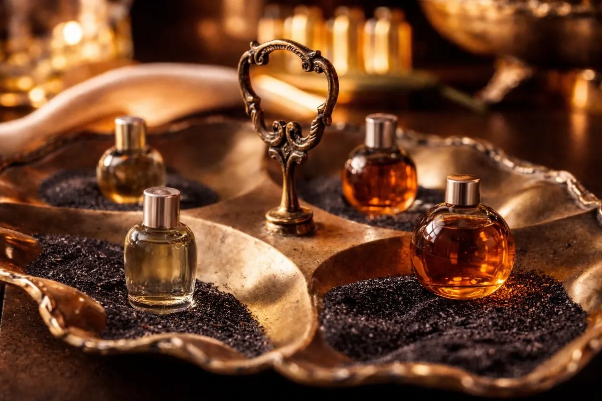
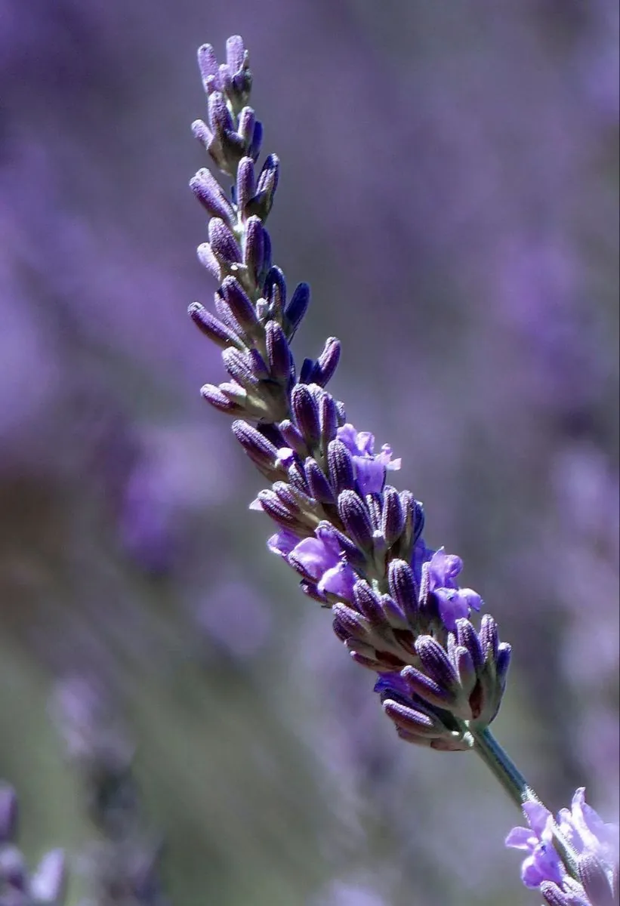
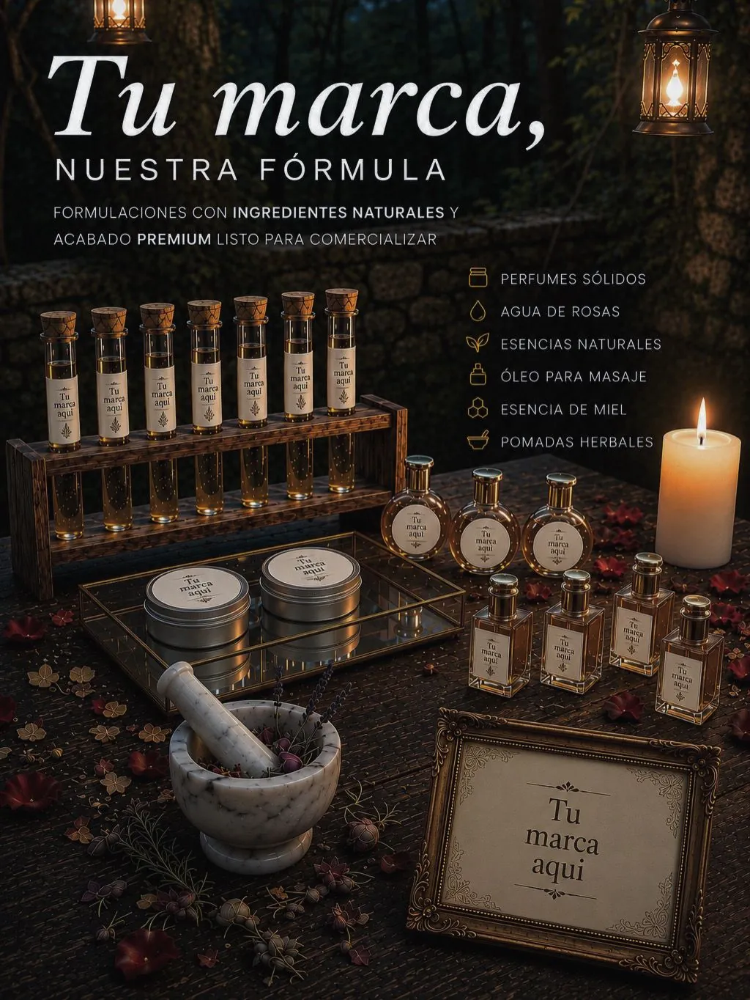
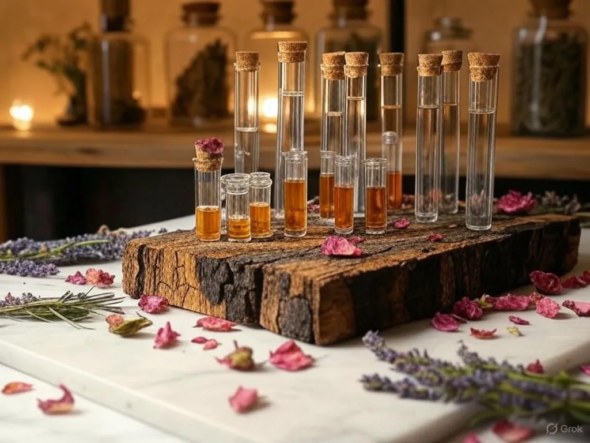

Casa Tapputi
Herbolaria medicinal viva creada a partir de flores, resinas y raíces medicinales, transformadas en experiencias sensoriales que armonizan cuerpo y mente.
Conoce nuestros productosNuestra Historia
Del jardín medicinal al taller de herbolaria
En el corazón de Huerto Roma Verde se encuentra un jardín medicinal, ante el cual se erige el taller de herbolaria. Más de 12 años de esfuerzo en Huerto Roma Verde dieron como fruto este espacio donde las plantas medicinales cultivadas se transforman en productos de lujo. En 2020, iniciamos un proyecto aún más profundo, arraigado en la revitalización de las relaciones entre el mundo antiguo y sus tradiciones venerables. Honramos estas herencias culturales, rescatándolas para nuestro presente a través de artículos de uso diario que embellecen y cuidan el cuerpo, inspirados por el legado de civilizaciones pasadas.

Lo que nos define
Valores
Patrimonio
Guardamos y transmitimos el legado cultural a través de cada producto, como guardianes del conocimiento antiguo.
Eco-Conciencia
Abrazamos la Tierra como nuestro taller vivo. Todos nuestros procesos respetan los ciclos naturales, utilizando solo materiales éticos y sostenibles, para que cada creación sea una ofrenda regenerativa al planeta.
Maestría
Donde el arte se encuentra con más de una década de práctica artesanal, nace una maestría que transforma lo simple en sagrado.
Empoderamiento Comunitario
Elevamos a las comunidades locales, reconociendo y valorando el talento artesanal heredado. Transformamos ese conocimiento heredado en oportunidades económicas justas y sostenibles, tejiendo redes de apoyo y cooperación.
Sabiduría
Aprendemos de las enseñanzas del pasado para informar nuestro presente y futuro, compartiendo esta sabiduría con nuestros clientes.
Exquisitez
Nos enorgullecemos de ofrecer una experiencia de lujo que va más allá del material, celebrando la belleza de lo auténtico.
Vive Casa Tapputi
Experiencias
Reunimos la sabiduría herbal y los oficios artesanales en un mismo santuario. Aquí creamos medicinas naturales, esencias, jabones botánicos, trabajamos con cuero, construyes terrarios vivos, exploras aromas profundos y llevas la danza del fuego a tus eventos.
Aromaterapia
Más que un aceite es una danza simbiótica entre flores y resinas, una composición que se activa en la piel y se percibe en lo profundo. Cada gota de esencia pura es un instante donde el cuerpo responde, y el efecto se siente de inmediato.

Spa en la naturaleza
JARDIN MEDICINAL
Un jardín medicinal donde el cuidado nace de las plantas, los aromas y la tierra.

Eventos
Nuestros eventos sensoriales cobran vida entre plantas, aromas y oficios artesanales.
Para tu negocio
Marca privada y eventos
Formulamos productos con tu marca, listos para vender, y llevamos el taller de herbolaria a tus eventos corporativos.

Marca Privada
Perfumes, esencias, óleos y pomadas con acabado premium listos para comercializar bajo tu marca, sin producción propia.

Eventos y Grupos
Barra de Aromas y Performance con Fuego para transformar tu evento corporativo o privado en una experiencia sensorial.
Caminamos acompañados
Alianzas
Huerto Roma Verde
Laboratorio BioSocial · Roma Sur, CDMX
«Laboratorio de resiliencia biosocial fundado en 2012 sobre terrenos devastados por el sismo de 1985. Centro comunitario que transforma espacios urbanos en huertos de permacultura, mercados agroecológicos y zonas de encuentro regenerativo.»
Fundación E.B.A.C.
Por una vida digna
«Asociación Civil sin fines de lucro que cree en la transformación social desde el cambio personal, teniendo como directrices la no violencia en cualquiera de sus modalidades y la dignificación de la vida en todas sus expresiones.»